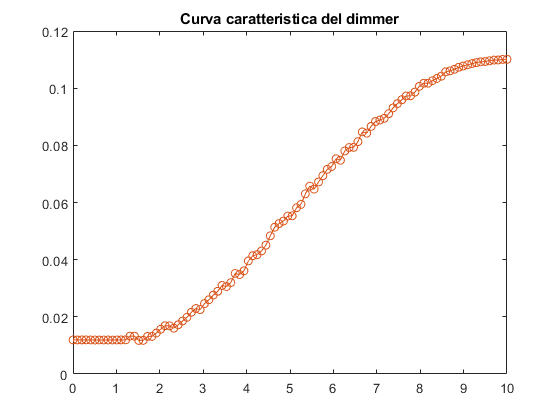

delete(instrfind);
FGEN = visa('ni', 'GPIB0::2::INSTR');
DMM = visa('ni', 'GPIB0::3::INSTR');
fopen(FGEN);
fopen(DMM);
query(FGEN, '*idn?')
query(DMM, '*idn?')
N = 100;
Vmin = 0;
Vmax = 10;
Vinput = linspace(Vmin, Vmax, N);
Vout = NaN*zeros(size(Vinput));
fprintf(FGEN, 'APPLY:DC DEF,DEF,0');
for k = 1:N
comm = sprintf('APPLY:DC DEF,DEF,%6.2f',Vinput(k));
fprintf(FGEN, comm);
pause(0.1);
Vout(k) = query(DMM, 'MEAS:VOLT:AC?','%s','%f');
plot(Vinput, Vout, 'o-');
hold on
end
title('Curva caratteristica del dimmer');
fprintf(FGEN, 'APPLY:DC DEF,DEF,0');
fclose(FGEN);
fclose(DMM);
ans =
'HEWLETT-PACKARD,33120A,0,10.0-5.0-1.0
'
ans =
'HEWLETT-PACKARD,34401A,0,10-5-2
'
